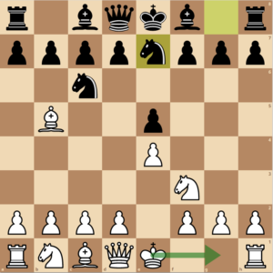
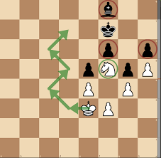

Advanced Chess Opening Theory
Dive deeper into chess theory:
- Analyze pawn structures and weaknesses. This is critical at higher levels because double pawns means they cannot defend each other which is a long term weakness. In addition, having isolated pawns is worse meaning there are no nearby pawns that support the isolated pawn.
- Study transpositions between openings. This means you need to decide your middle game strategies. For example it could be very helpful to study past games and decide what moves would have been better according to chess engines, fixing your mistakes the next game and improving. 
- Understand the balance between tactics and strategy. Having a great position is very important but strategies are very signficant if you want to win. Great positions usually mean you have great control of the center, you have minimal weaknesses, your peices are all fully developed and active as they target peices. A poor position usually involves a weak king, your peice that needs to be protected at all cost, isolated pawns or double pawns. It also poorly positioned peices. 
Theory: this is the idea of how certain moves in your position affect your overall position millions of moves ahead according to advanced chess engines.